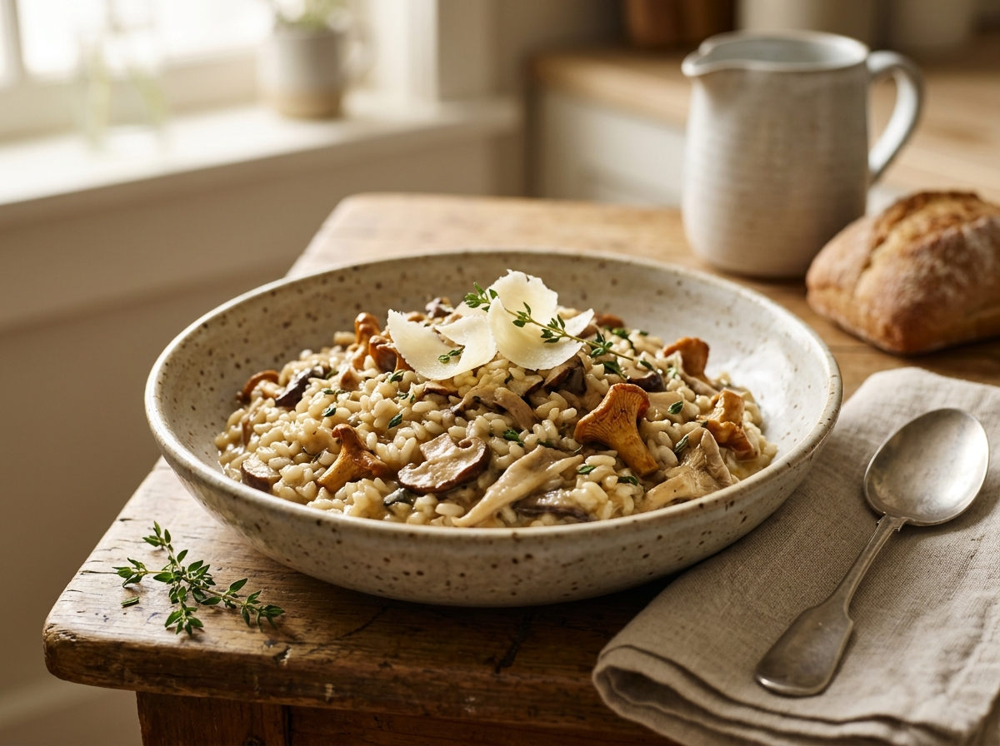
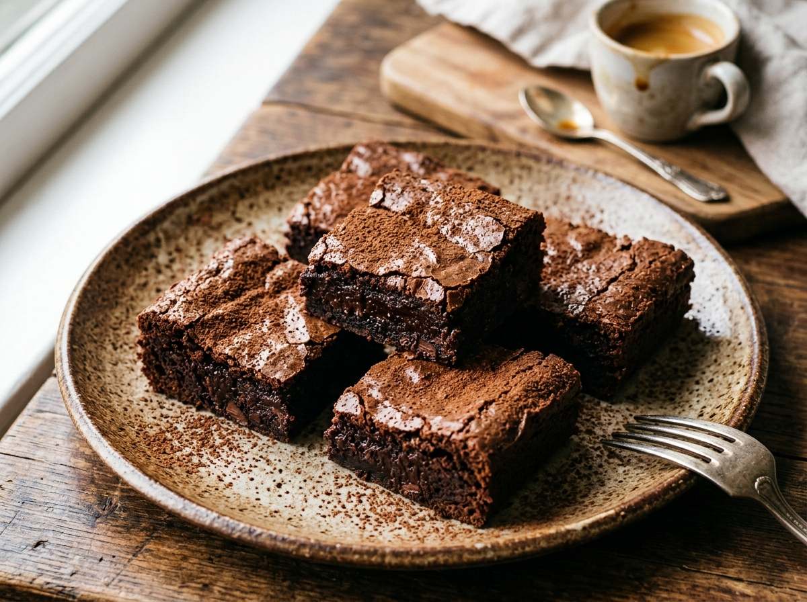

Breakfast & Brunch
Spiced Tomato & Pepper Shakshuka
Poached eggs nestled in a smoky roasted-pepper and cumin tomato sauce served with crusty bread.
Explore our editorial archive of ten balanced dishes—from browned-butter pastries and skillet breakfasts to slow-simmered risottos, saffron rice, and vibrant grain bowls.
Savory Kitchen
Breakfast, mains, seafood, and grain bowls — select any card to open the full recipe.
Poached eggs nestled in a smoky roasted-pepper and cumin tomato sauce served with crusty bread.
 Comfort Mains
Comfort Mains
Slow-stirred Arborio rice infused with roasted cremini and shiitake mushrooms, thyme, and aged Parmesan.
 Seafood & Light
Seafood & Light
Crisp-skinned salmon fillets finished with bright lemon butter, garlic, capers, and fresh dill.
 Plant-Forward
Plant-Forward
Crisp cumin-roasted chickpeas over fluffy grains with cucumber, cherry tomatoes, and tahini drizzle.

Comfort MainsSilky linguine tossed in sweet confit-style garlic oil, blistered cherry tomatoes, and fresh basil.
 Comfort Mains
Comfort Mains
Fragrant long-grain basmati rice steeped with golden saffron threads, toasted pistachios, and barberries.
Sweet Corner
Cookies, brownies, chilled bowls, and rustic tarts — select any card to open the full recipe.
 Bakery & Pastry
Bakery & Pastry
Nutty browned butter, deep dark chocolate chunks, and crisp golden edges with a tender center.

Bakery & PastryDense, glossy chocolate squares with a crackly top crust and a subtle espresso depth.
 Chilled Dessert
Chilled Dessert
Chilled coconut-cardamom chia pudding layered with ripe mango puree and toasted coconut flakes.
 Bakery & Pastry
Bakery & Pastry
Rustic folded pastry tart filled with bright orange-zest cream, berries, and wildflower honey glaze.